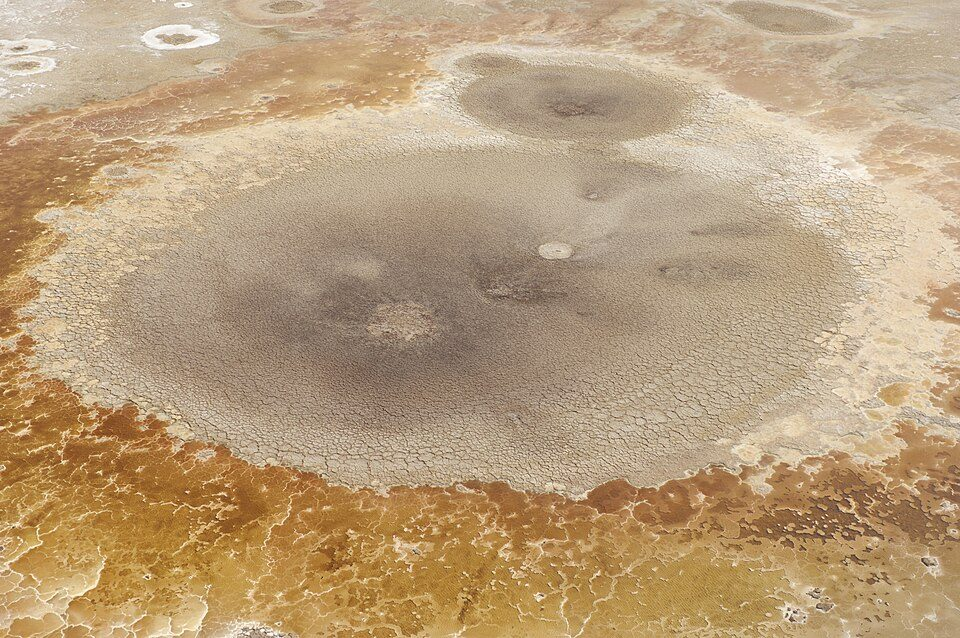

Récords del planeta
El punto más alto y el más profundo, el río más largo, el lago más hondo, la cascada más alta, el lugar más lluvioso y otros récords de la Tierra.


Una colección de los récords naturales más asombrosos del planeta. Algunos se discuten todavía, porque dependen de cómo se mida; lo indicamos cuando es así.
Alturas y profundidades
| Récord | Dónde | Cifra |
|---|---|---|
| Punto más alto | Everest | 8.849 m |
| Punto más profundo | Abismo Challenger, fosa de las Marianas | ≈ 10.935 m bajo el mar |
| Punto más bajo en tierra firme | Orilla del mar Muerto | ≈ 430 m bajo el nivel del mar, y bajando |
| Cañón más profundo | Cañón del Yarlung Tsangpo (Tíbet) | ≈ 5.000 m |
| Cueva más profunda | Cueva Veryovkina (Georgia) | 2.212 m |
La diferencia entre la cima del Everest y el fondo de las Marianas es de casi 20 km. Parece mucho, pero si la Tierra fuera del tamaño de una bola de billar, sería más lisa que una bola de billar real.
Agua
| Récord | Dónde | Cifra |
|---|---|---|
| Río más largo | Nilo o Amazonas (en discusión) | ≈ 6.650 / 6.400-7.000 km |
| Río más caudaloso | Amazonas | ≈ 209.000 m³/s |
| Lago más profundo | Baikal (Rusia) | 1.642 m |
| Lago más grande | Mar Caspio | ≈ 371.000 km² |
| Cascada más alta | Salto Ángel (Venezuela) | 979 m |
| Cascada con más caudal | Cataratas del Congo (Inga) | ≈ 25.000 m³/s |
| Mar más salado | Mar Muerto | ≈ 34 % de sal, diez veces el océano |
El mar Muerto es tan salado que en él se flota sin esfuerzo y apenas hay vida. Su nivel baja más de un metro al año porque se desvía el agua del río Jordán.

.jpg){kind=link}
Clima
| Récord | Dónde | Cifra |
|---|---|---|
| Temperatura más alta fiable | Valle de la Muerte (EE. UU.) | 54,4 °C |
| Temperatura más baja | Base Vostok (Antártida) | −89,2 °C |
| Lugar más lluvioso | Mawsynram (India) | ≈ 11.800 mm al año |
| Lugar más seco | Desierto de Atacama (Chile) | < 1 mm al año en algunas zonas |
| Viento más fuerte medido | Isla Barrow (Australia), ciclón Olivia, 1996 | 408 km/h |
| Granizo más grande | Vivian (EE. UU.), 2010 | 20 cm de diámetro |
| Récord en España | La Rambla (Córdoba), 2021 | 47,4 °C |
Seres vivos
- El ser vivo más grande: un hongo Armillaria de Oregón que ocupa casi 10 km² bajo tierra.
- El árbol más alto: Hyperion, una secuoya de 116 m (ver bosques).
- El animal más grande: la ballena azul, hasta 30 m.
- El animal más rápido: el halcón peregrino, a más de 320 km/h en picado.
- El ser vivo más longevo: quizá la posidonia de Ibiza y Formentera, de hasta 100.000 años.